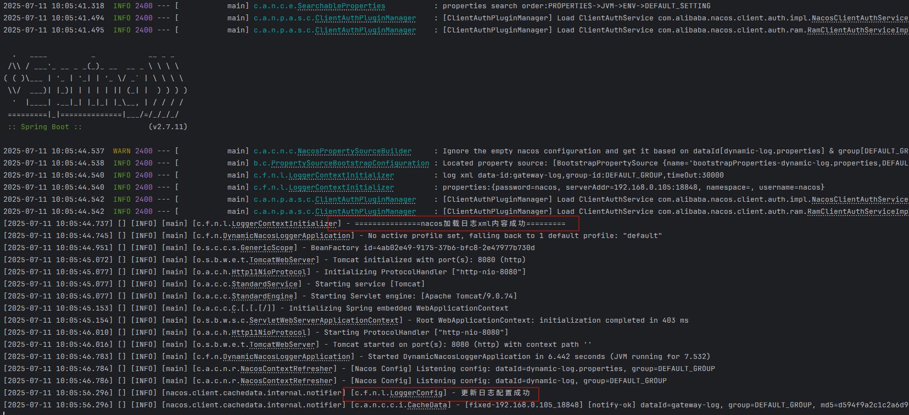

Log4j2日志配置远程集中管理：Spring Boot对接Nacos方案详解
在开发中一般把日志文件配置xml文件，放在项目的resource文件夹下，但是每个系统都有一个日志xml配置文件，如果需要修改日志格式等配置则需要重新发版，流程很长，所以提出需求需要通过nacos配置中心读取并且实现配置动态刷新的能力。通过改变加载顺序实现在项目启动时，通过nacos读取到配置的日志XML文件，然后将xml文件内容放入LoggerContext，实现日志文件加载。
引入log4j2框架
<dependency>
<groupId>org.springframework.boot</groupId>
<artifactId>spring-boot-starter-web</artifactId>
<exclusions>
<!-- 排除logback框架 -->
<exclusion>
<groupId>org.springframework.boot</groupId>
<artifactId>spring-boot-starter-logging</artifactId>
</exclusion>
</exclusions>
</dependency>
<!-- 引入log4j2数据 -->
<dependency>
<groupId>org.springframework.boot</groupId>
<artifactId>spring-boot-starter-log4j2</artifactId>
</dependency>获取配置xml文件并加载
编码
通过nacos加载日志配置xml文件难点在于，需要在项目启动之前，将日志文件加载到日志上下文中，需要使用spring 提供的 ApplicationContextInitializer 接口来实现这个功能。ApplicationContextInitializer 的作用，它允许你在 Spring 容器加载 Bean 之前做一些初始化工作，例如：
- 设置环境变量
- 加载外部配置（如从 Nacos、Zookeeper 等）
- 初始化日志系统等基础设施
加载实现逻辑如下：
import com.alibaba.nacos.api.NacosFactory;
import com.alibaba.nacos.api.config.ConfigService;
import com.alibaba.nacos.api.exception.NacosException;
import org.apache.commons.lang3.StringUtils;
import org.apache.logging.log4j.LogManager;
import org.apache.logging.log4j.core.LoggerContext;
import org.apache.logging.log4j.core.config.ConfigurationFactory;
import org.apache.logging.log4j.core.config.ConfigurationSource;
import org.apache.logging.log4j.core.config.Configurator;
import org.slf4j.Logger;
import org.slf4j.LoggerFactory;
import org.springframework.context.ApplicationContextInitializer;
import org.springframework.context.ConfigurableApplicationContext;
import org.springframework.core.Ordered;
import java.io.ByteArrayInputStream;
import java.nio.charset.StandardCharsets;
import java.util.Properties;
public class LoggerContextInitializer implements ApplicationContextInitializer<ConfigurableApplicationContext>, Ordered {
private Logger logger = LoggerFactory.getLogger(LoggerContextInitializer.class);
/**
* 日志配置文件
*/
public static final String LOGGER_CONFIG_DATA_ID = "logger.config.data-id";
public static final String LOGGER_CONFIG_GROUP_ID = "logger.config.group-id";
public static final String LOGGER_CONFIG_TIME_OUT = "logger.config.time-out";
/**
* spring cloud nacos 配置
*/
public static final String SPRING_CLOUD_NACOS_CONFIG_SERVER_ADDR = "spring.cloud.nacos.config.server-addr";
public static final String SPRING_CLOUD_NACOS_CONFIG_USERNAME = "spring.cloud.nacos.config.username";
public static final String SPRING_CLOUD_NACOS_CONFIG_PASSWORD = "spring.cloud.nacos.config.password";
public static final String SPRING_CLOUD_NACOS_CONFIG_NAMESPACE = "spring.cloud.nacos.config.namespace";
private ConfigurableApplicationContext ctx;
@Override
public void initialize(ConfigurableApplicationContext applicationContext) {
this.ctx = applicationContext;
loadLoggerContext();
}
/**
* 加载日志上下文
*/
public void loadLoggerContext() {
String dataId = getProperty(LOGGER_CONFIG_DATA_ID);
String groupId = getProperty(LOGGER_CONFIG_GROUP_ID);
String timeOut = getPropertyOrDefault(LOGGER_CONFIG_TIME_OUT, "30000");
try {
if (ctx.containsBean("nacosConfigManager")) {
logger.info("log xml data-id:{},group-id:{},timeOut:{}", dataId, groupId, timeOut);
ConfigService configServer = createConfigServer();
// 日志的xml文件内容
String xmlContext = configServer.getConfig(dataId, groupId, Long.parseLong(timeOut));
if (StringUtils.isNotBlank(xmlContext)) {
configLogger(xmlContext);
logger.info("===============nacos加载日志xml内容成功=========");
}
}
} catch (Exception e) {
logger.error("加载日志信息异常，异常原因为：{}", e);
}
}
/**
* @return
* @throws NacosException
*/
public ConfigService createConfigServer() throws NacosException {
// 获取nacos相关配置
Properties properties = new Properties();
properties.setProperty("serverAddr", getProperty(SPRING_CLOUD_NACOS_CONFIG_SERVER_ADDR));
properties.setProperty("namespace", getProperty(SPRING_CLOUD_NACOS_CONFIG_NAMESPACE));
properties.setProperty("username", getProperty(SPRING_CLOUD_NACOS_CONFIG_USERNAME));
properties.setProperty("password", getProperty(SPRING_CLOUD_NACOS_CONFIG_PASSWORD));
logger.info("properties:{}", properties);
return NacosFactory.createConfigService(properties);
}
/**
* 日志上下文加载模块
*
* @param loggerXml
*/
public void configLogger(String loggerXml) {
try {
ConfigurationSource configuration = new ConfigurationSource(new ByteArrayInputStream(loggerXml.getBytes(StandardCharsets.UTF_8)));
Configurator.initialize(null, configuration);
LoggerContext loggerContext = (LoggerContext) LogManager.getContext(false);
loggerContext.start(ConfigurationFactory.getInstance().getConfiguration(loggerContext, configuration));
} catch (Exception e) {
logger.info(e.getMessage());
}
}
public String getPropertyOrDefault(String propertyName, String defaultValue) {
String property = ctx.getEnvironment().getProperty(propertyName);
return property == null ? defaultValue : property;
}
/**
* 获取属性值
*
* @param propertyName
* @return
*/
public String getProperty(String propertyName) {
return ctx.getEnvironment().getProperty(propertyName);
}
@Override
public int getOrder() {
return Ordered.HIGHEST_PRECEDENCE + 15;
}
}
其中核心在于**loadLoggerContext()** 和 configLogger(String loggerXml) 两个方法，通过创建nacos连接，读取指定配置的data-id、group-id文件，加载到系统然后放入 LoggerContext 中，实现日志文件大加载。以上部分实现了从nacos加载日志文件并且放入日志上下文中。在项目启动时就生效
注入方式
方式一：使用spring.factories实现注入
org.springframework.context.ApplicationContextInitializer=\ com.future.nacos.logger.LoggerContextInitializer方式二：使用SpringApplicaton注入
@SpringBootApplication public class DynamicNacosLoggerApplication { public static void main(String[] args) { SpringApplication springApplication = new SpringApplication(DynamicNacosLoggerApplication.class); springApplication.addInitializers(new LoggerContextInitializer()); springApplication.run(args); } }
动态刷新日志
动态刷新日志是通过创建一个nacos的监听器来对指定的配置进行监听，然后重新加载日志上下文内容，实现日志配置动态刷新功能。
实现如下：
import com.alibaba.cloud.nacos.NacosConfigManager;
import com.alibaba.nacos.api.config.listener.Listener;
import lombok.extern.slf4j.Slf4j;
import org.apache.commons.lang3.StringUtils;
import org.apache.logging.log4j.LogManager;
import org.apache.logging.log4j.core.LoggerContext;
import org.apache.logging.log4j.core.config.ConfigurationFactory;
import org.apache.logging.log4j.core.config.ConfigurationSource;
import org.apache.logging.log4j.core.config.Configurator;
import org.springframework.beans.BeansException;
import org.springframework.beans.factory.ObjectProvider;
import org.springframework.beans.factory.annotation.Autowired;
import org.springframework.beans.factory.annotation.Value;
import org.springframework.context.ApplicationContext;
import org.springframework.context.ApplicationContextAware;
import org.springframework.stereotype.Component;
import java.io.ByteArrayInputStream;
import java.io.IOException;
import java.nio.charset.StandardCharsets;
import java.util.concurrent.Executor;
@Component
@Slf4j
public class LoggerConfig implements ApplicationContextAware {
@Autowired
ObjectProvider<NacosConfigManager> nacosConfigManager;
@Value("${logger.config.data-id:}")
private String dataId;
@Value("${logger.config.group-id:}")
private String groupId;
private ApplicationContext applicationContext;
public LoggerContext getLoggerContext() {
return (LoggerContext) LogManager.getContext(false);
}
public void addLoggerConfigListener() {
NacosConfigManager configManager = this.nacosConfigManager.getIfAvailable();
if (configManager != null && StringUtils.isNotBlank(dataId) && StringUtils.isNotBlank(groupId)) {
try {
configManager.getConfigService().addListener(dataId, groupId, new Listener() {
@Override
public Executor getExecutor() {
return null;
}
@Override
public void receiveConfigInfo(String configInfo) {
try {
loadOnChange(configInfo);
} catch (Exception e) {
log.error("日志配置异常");
}
}
});
} catch (Exception e) {
log.error("logger config 注册失败");
}
}
}
public void loadOnChange(String loggerXml) throws IOException {
if (StringUtils.isBlank(loggerXml)) {
log.info("不存在日志文件");
return;
}
configLogger(loggerXml);
log.info("更新日志配置成功");
}
/**
* @param loggerXml
*/
public void configLogger(String loggerXml) throws IOException {
ConfigurationSource configuration = new ConfigurationSource(new ByteArrayInputStream(loggerXml.getBytes(StandardCharsets.UTF_8)));
Configurator.initialize(null, configuration);
LoggerContext loggerContext = getLoggerContext();
loggerContext.start(ConfigurationFactory.getInstance().getConfiguration(loggerContext, configuration));
}
@Override
public void setApplicationContext(ApplicationContext applicationContext) throws BeansException {
this.applicationContext = applicationContext;
addLoggerConfigListener();
}
}日志动态更新不需要再应用启动之前进行配置，只需要再应用启动之后进行监听配置。
实现效果

遇到的问题
问题1：动态更新日志XML文件失效，设置的nacos监听器不生效。
产生原因：启动时使用application.yaml文件启动，导致不生效，修改为bootstrap.yaml后生效
解决方案：项目启动时使用bootstrap.yaml文件
项目使用nacos依赖为：
<!--nacos配置中心 --> <dependency> <groupId>com.alibaba.cloud</groupId> <artifactId>spring-cloud-starter-alibaba-nacos-config</artifactId> </dependency>